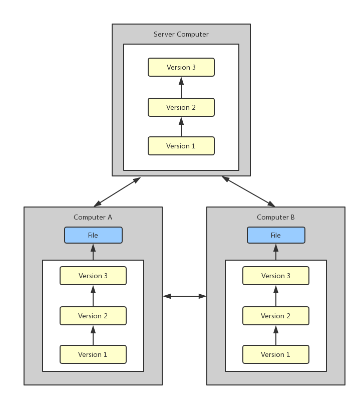
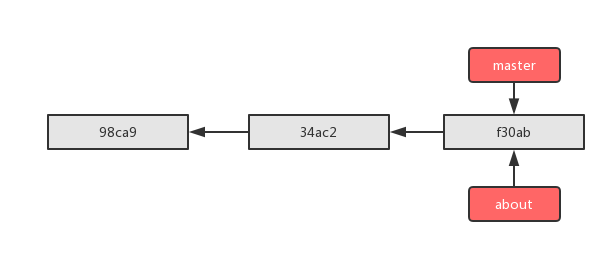
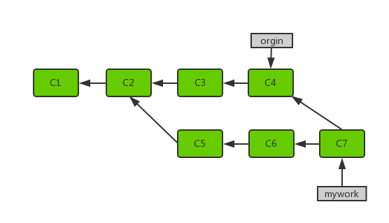
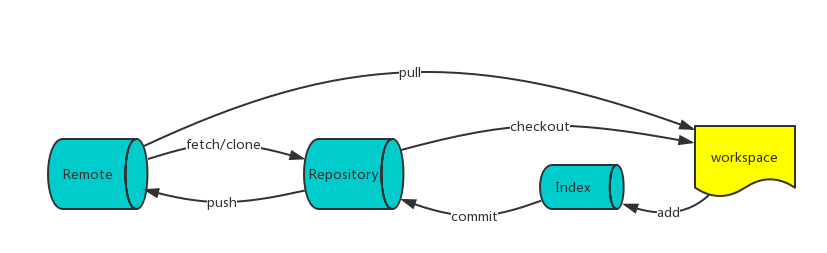

git¶
- Linus 用 C 语言编写而成
- 2005 年诞生
- 分布式版本管理系统
- 速度快，适合大规模，跨地区多人协同开发
版本管理的发展历史¶
本地版本管理
用简单的数据库来记录文件的历次更新差异。 本地版本控制系统存在的问题，只要整个项目的历史记录被保存在单一位置，就有丢失所有历史更新记录的风险。
集中化的版本控制系统
用单一的几种管理的服务器，来保存所有文件的修订版本，而协同工作的人们都通过客户端连接到这台服务器，下载最新的代码或者是更新提交。 但是如果中央服务器宕机了，那宕机的这一段时间，大舅都没有办法提交更新，没办法协同工作。而且中央服务器的数据么有做备份而且损坏，所有记录就会丢失了。
分布式版本控制
分布式最大的特点就是客户端并不只是提取最新版本的文件快照，而是把代码仓库完整的镜像下来，每个客户端其实都可以当做是中央服务器，当中央服务器数据损坏了，从任何一个本地客户端都可以重新恢复。而且我们这样过在家也可以提交代码了，我们提交代码是提交到本地服务器，所以效率大大提高。近乎所有操作都是在本地执行、保证完整性、一般只添加数据库。
git 原理¶
四个区域¶
需要关注 git 实现机制中的一块就是 git 的四个区域：工作区域、暂存区域、本地仓库、远程仓库。
工作区域
工作区就是我们当前项目目录内，所有修改都是在工作区内进行。
暂存区域
暂存区（stage）也叫索引区（index），本地文件修改之后，add 操作会将修改添加大暂存区，那么本地和暂存区修改保持一致。
本地仓库
通过 clone 或者 init 目录之后，本地仓库便建立了，我们所有的修改，都要先提交到本地，是通过暂存区提交的（可以通过工作区直接提交到本地仓库）。
如暂存区域图片所示，通过 git commit 即可把 stage 区域的修改提交到本地仓库。每一次提交都会生成一个版本号，版本号是 SHA-1 编码的编号。
远程仓库
远程仓库是放在远程服务器上，虽然说 git 是一个分布式版本控制系统，但是一般我们 worker 都会使用同一个远程仓库，这点感觉和 svn 并没有太大差别，只是 remote 挂掉之后，我们每个 worker 可以互相用对方的 repo (修改 repo 地址即可)。 通过 clone 可以把远程仓库 clone 下拉，push 操作将本地的仓库版本提交到远程仓库。
本地远程分支和远程分支
git 本地仓库其实还会分为本地分支、本地远程分支。git fetch 拉下来的代码会放到本地远程分支上而不是直接合并到本地分支。
可以通过
git branch查看本地远程分支。git pull orgin master = git fetch origin master + git merge origin/master
这个比较重要，一定要引起注意。
常用命令
命令 内容 git add加入暂存区域（索引区） git status查看状态 git status -s状态概览 git diff尚未暂存的文件 git diff --staged暂存区域文件 git commit提交更新 git reset回滚 git rm从版本库中移除 git rm --cached README从暂存区域中移除 git mv相当于 mvgit rmgit add三个命令
环境安装¶
源码包安装¶
RHEL/CentOS¶
类 RHEL 系统默认安装的版本是较旧的 1.8 版本，推荐使用 2.7 版本。
安装依赖
yum upgrade -y yum install libcurl-devel \ expat-devel \ gettext-devel \ openssl-devel \ zlib-devel \ gcc \ perl-ExtUtils-MakeMaker \ bash-completion \ unzip
获取源码包
注意不要使用 git 1.8 版本，推荐使用 2.7 版本
wget https://github.com/git/git/archive/v2.7.4.zip unzip v2.7.4.zip cd git-2.7.4编译
make prefix=/usr/local/git all make prefix=/usr/local/git install rm -rf /usr/bin/git ln -s /usr/local/git/bin/git /usr/bin/git
检查
git --version
Debian/Ubuntu¶
Ubuntu 发行版 apt repo 中 git 二进制安装包版本就是 2.7
安装依赖
sudo apt update sudo apt upgrade -y sudo apt -y install \ libcurl4-gnutls-dev \ libexpat1-dev \ gettext \ libz-dev \ libssl-dev \ unzip \ make \ gcc \ perl
获取源码包
注意不要使用 git 1.8 版本，推荐使用 2.7 版本
wget https://github.com/git/git/archive/v2.7.4.zip unzip v2.7.4.zip cd git-2.7.4编译
sudo make prefix=/usr/local/git all sudo make prefix=/usr/local/git install sudo rm -rf /usr/bin/git sudo ln -s /usr/local/git/bin/git /usr/bin/git
检查
git --version
二进制包安装¶
RHEL/CentOS¶
添加额外的 git repo，安装指定版本的 git
添加 repo 源
cat > /etc/yum.repos.d/WANdisco-git.repo << EOF [WANdisco-git] name=WANdisco Replicated Git baseurl=http://opensource.wandisco.com/replication/rhel/\$releasever/git/\$basearch gpgcheck=1 gpgkey=file:///etc/pki/rpm-gpg/RPM-GPG-KEY-WANdisco EOF curl -s http://opensource.wandisco.com/RPM-GPG-KEY-WANdisco > RPM-GPG-KEY-WANdisco rpm --import RPM-GPG-KEY-WANdisco rm -f RPM-GPG-KEY-WANdisco
安装 git
yum install git-<version>
Debian/Ubuntu¶
使用 apt 包管理器直接安装
- 添加 PPA 源
sudo add-apt-repository ppa:git-core/ppa
sudo apt-get update
- 安装 git
sudo apt -y install git
git --versio
分支管理¶

当我们提交了多次，通过 git status 查看，提示我们工作在 master 分支上，为什么每次提交都会提交到 master 分支上？因为 HEAD 指针指向的是 master 分支。
创建分支¶
当开发者添加新的功能，这可能需要修改以前的代码，如果继续在 master 分支上开发的话，首选会导致 master 分支上提交特别多，其次多人协同开发，大家都在 master 分支上进行开发，功能会比较混乱。所以切记当你要开发一个新的功能的时候，不要在 master 主分支上进行开发，一定要创建一个新的分支。
git branch <branch_name>
切换分支¶

切换分支就是将 HEAD 指针从原来指向 master 切换为指向 about。
切换分支时，一定要注意你工作目录里的文件会被改变。如果是切换到一个较旧的分支，你的工作目录会恢复到该分支最后一次提交时的状态。如果 Git 不能干净利落地完成这个任务，它将禁止切换分支。
git checkout <branch_name>
合并分支¶
在提交 C1、C2 两次之后，创建了一个分支，C3、C4 与 C5、C6 是平行的，当使用 git merge 提交的时候，C7 两个分支进行了合并提交。
git merge <branch_name>
分支命令¶
| 命令 | 内容 |
|---|---|
git branch |
查看所有分支 |
git branch -v |
查看所有分支详细内容 |
git branch --merged |
查看已被合并的分支 |
git branch --no-merged |
查看未被合并的分支 |
git branch -d about |
删除指定分支 |
git checkout |
切换分支 |
git merge |
分支合并 |
git log |
查看分支日志 |
git stash |
制作暂存区域 |
git tag |
打标签 |
高级管理¶
查看¶
git checkout用于切换分支checkout 一个文件和带文件路径执行
git reset相似，除了它更改的是工作目录而不是缓冲区。不像提交层面的 checkout 命令，它不会移动 HEAD 引用，也就是你不会切换到别的分支上去。git checkout -- file.ext撤销对文件的修改
如果你缓存并且提交了checkout 的文件，它具备将某个文件回撤到之前版本的效果。注意它撤销了这个文件后面所有的更改，而
git revert命令只撤销某个特定提交的更改。
回滚¶
--mixed默认选项。缓存区域和你指定的提交同步，但工作目录不受影响--soft缓存区和工作目录都不会改变--hard缓存区域和工作目录都同步到你指定的提交
这些参数在工作当中都有什么不同的意义呢？虽然在调用时加上 --hard 选项可以令 git reset 成为一个危险的命令（注释：可能导致工作目录中所有当前进度丢失！）不加选项默认调用 git reset --mixed 并不危险，它只会修改暂存区域。
git reset HEAD~2
上面示例命令中 HEAD~2 是语法糖，含义是将 HEAD 向前移动两个提交。
文件层操作¶
当检测到文件路径时，git reset 将缓存区同步到你指定的那个提交。比如，下面这个命令会将倒数第二个提交中的 foo.py 加入缓存区中，供下一个提交使用。
git reset HEAD~2 foo.py
运行 git reset HEAD foo.py 会将当前的 foo.py 从缓存区域中移除出去，而不会影响工作目录中对 foo.py 的更改。
–soft、–mixed 和 –hard 对文件层面的 git reset 毫无作用，因为缓存区域中的文件一定会变化，而工作目录中的文件一定不变。
使用场景¶
| 命令 | 作用域 | 常用场景 |
|---|---|---|
git reset |
提交层面 | 版本回滚，在私有分支上舍弃一些没有提交的更改 |
| 文件层面 | 将文件从缓存区中移除 | |
git checkout |
提交层面 | 切换分支或查看旧版本 |
| 文件层面 | 舍弃工作目录中的更改 | |
git revert |
提交层面 | 在公共分支上回滚更改 |
| 文件层面 | （没有） |
git reflog 命令分析你所有分支的头指针的日志来查找出你在重写历史上可能丢失的提交。
远程仓库¶
远程管理¶
git clone https://github.com/respawner/looking-glass
git pull
git fetch
git push origin master
git remote
git remote -v
git remote add xxx http://xxx
git remote show origin
git remote rename pb paul
git tag -a v1.0 -m "abc"
标签管理¶
git tag -a v1.4 -m 'my version 1.4'
git show v1.4
git tag -a v1.2 9fceb01
# 对历史打标签
git push origin v1.5
# 将标签推向远程
git push origin --tags
# 推送多个标签
git checkout -b version2 v2.0.0
# 检出标签